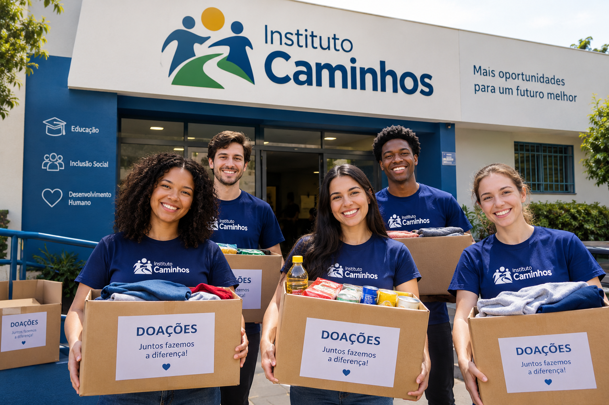

Caminhos para a Educação
Aproximamos pessoas de iniciativas educacionais, incentivando o acesso ao conhecimento e apoiando atividades de aprendizagem na comunidade.
O Instituto Caminhos transforma solidariedade em ações concretas dentro da comunidade. Aproximamos quem quer ajudar de quem precisa de apoio.

O Instituto Caminhos funciona como um ponto de conexão entre pessoas que desejam fazer a diferença e as causas que precisam de apoio. Atuamos por meio de campanhas de arrecadação, voluntariado e distribuição de doações, com educação, engajamento comunitário e suporte a projetos sociais.
O nome reflete a nossa ideia central: cada pessoa contribui de uma maneira diferente, e todas essas formas juntas ajudam a construir um caminho melhor.
Aproximamos pessoas de iniciativas educacionais, incentivando o acesso ao conhecimento e apoiando atividades de aprendizagem na comunidade.
Criamos pontes entre voluntários e ações sociais existentes, valorizando a colaboração para fortalecer o impacto local.
Divulgamos oportunidades de participação social, para que cada pessoa encontre a melhor forma de contribuir.
Você não precisa fazer tudo. Escolha a forma que combina com o seu tempo e com o que você sabe fazer.
Doe um pouco do seu tempo e das suas habilidades em ações na comunidade.
Quero ser voluntárioContribua com campanhas de arrecadação que abastecem as ações do Instituto.
Saiba como doarAjude a manter e ampliar as iniciativas que já existem.
Saiba como apoiarDivulgue as ações e leve a mensagem do Instituto para mais pessoas.
Saiba como divulgarTransformar solidariedade em ações concretas, conectando voluntários, doadores e pessoas em situação de vulnerabilidade.
Uma comunidade em que ajudar seja simples, acessível e aberto a todos.
Acolhimento, solidariedade, confiança, participação comunitária, esperança e transparência.
Faça seu cadastro e diga como gostaria de ajudar.
Fazer meu cadastro